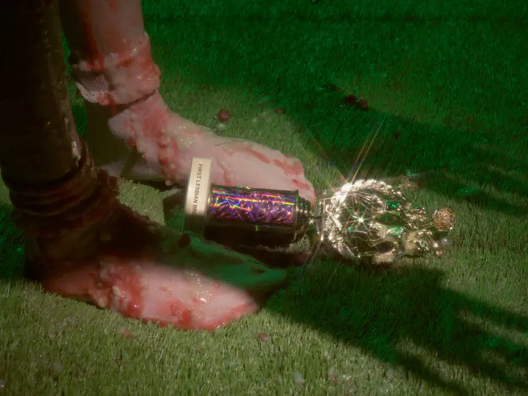
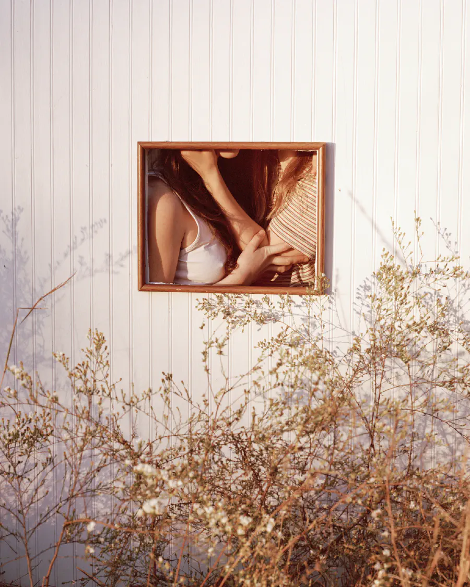
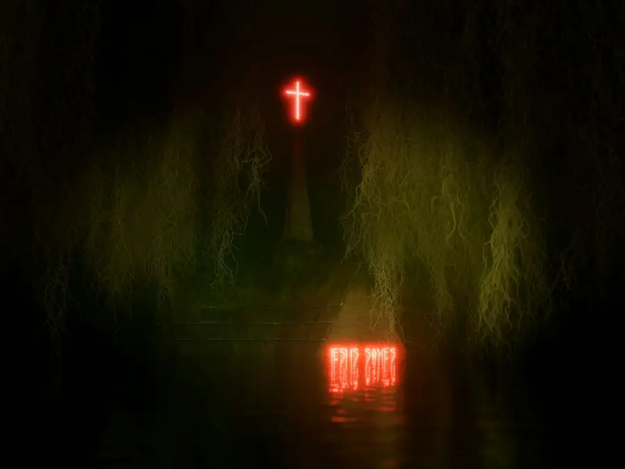

Jay Serrano, Editor-in-Chief
February 05, 2024
Penny Molesso is a transmedia artist, filmmaker, and writer based in Omaha, Nebraska. They received their MFA at the University of Nebraska-Lincoln in 2023. Penny was a Lambda Literary Foundation fellow in screenwriting in 2023. Their visual art and poetry has been published in muzzle, WMN Zine, and Fraction Magazine. We caught them and decided to ask a few questions about their work. You can visit their website here.
Usually the story comes first and then the choice of what mediums to use follows. Sometimes the material or method of telling the story is quite important from the start, and sometimes it’s based on intuition. I made an ASMR short film, and webcam footage and computer generated imagery were essential mediums for telling the story. Lately I’ve been drawn to more physical materials and processes like paper and animatronics. I gravitate towards certain materials for a reason, but I don’t always know what that reason is when I start. I work off intuition and the reason why that material is important is something that I figure out through the process of creating.
I tend to start with one thing that I find interesting and I try to build a world and a story around that. For example, I recently saw a video of a pelican trying to eat a live animal that ended up tearing through its mouth, and I’ve been working on a story surrounding that one moment. Another way I approach storytelling is by imagining a picture or scene and trying to come up with what happens before and after that moment. Oftentimes I expand on these moments with a what-if question and try to envision all the possible outcomes. Once I have an idea, I do a lot of research and personal writing, looking for seeds of information that can connect together and shape a larger story. Sometimes that process leads to that one thing that sparked my interest no longer becoming the focal point, or not even being present at all, but it usually always starts with that one moment that sparks my interest.
La Casa Lobo directed by Cristóbal León & Joaquín Cociña has been driving my interest in stop motion and unconventional animation. The film is inspired by a real religious cult, and is supposed to act like an animated fairy tale created by the cult leader to indoctrinate its followers. It is disturbing, and the style of animation is haunting and beautiful. Some other media that has been influential in guiding my work and storytelling are the films Aftersun (dir. Charlotte Wells) and Past Lives (dir. Celine Song), and the book The Fifth Wound by Aurora Mattia.
Oh yes, this is something I’ve grappled with a lot. I think it’s important to remember that every artist has intersectional identities, and so does every viewer of our work. Octavia Butler wrote “the more personal, the more universal”. All I can do is tell a story that reflects my own experiences, to let others into my world and hope that it can resonate with them in some way. Most of the time the work I find most compelling is work that I don’t fully understand, that stays lingering with me long after viewing it. That kind of work makes me want to look it up and read more about it. If someone doesn’t understand something, I hope it will stick with them a little bit longer and hopefully they will want to learn more. If someone approaches work that is created by people whose experiences differ from theirs with an attitude that they have nothing to gain from it, I’m not interested in having them as my audience.
Whether an MFA program is right for someone depends on their goals. If their goal is to teach, or they feel like an intensive and critical environment is what they need to grow as an artist then I would recommend it. If their art career already has a strong foundation and they feel connected to a community where they are located, then grad school might not be necessary. The best things I gained from my MFA program are relationships with my peers and being challenged to think differently about my work. As far as advice– never pay for grad school! Look for programs that are fully funded, and talk with students who are already at schools you’re interested in to see what the environment is like! Photo green book has a list of fully funded MFA programs on their website (and while it is photo based a lot of these programs are inclusive of other art mediums as well)!
Whatever I’m currently working on is always my favorite. It keeps me excited about the process of creating, and I’m able to fixate on the project if I’m enjoying that process. When it comes to finished projects, I honestly think I hate everything I’ve made for at least a year after it is “finished”, especially when it involves putting my body in front of a camera and being vulnerable. I usually need some distance from the work before I can view it through a lens that isn’t purely critical.
Now that I’m out of grad school, my ADHD brain is happily embracing the opportunity to work on multiple projects simultaneously. I’m working on a short film about a queer couple who use a computer simulation to generate different scenarios to figure out how they will tell their conservative families they are getting married. I’m co-writing it with my partner, and I’ve been developing a style for the film that blurs the boundaries between stop motion animation and live action footage. I’m excited to see how it evolves. I’m also working on shorter form narrative videos at the same time. I’ve been kind of secretive about my work and life online lately, but in the coming months you can catch some of the shorter form stories somewhere out there on the internet.
{kind=link}
{kind=link}
{kind=link}